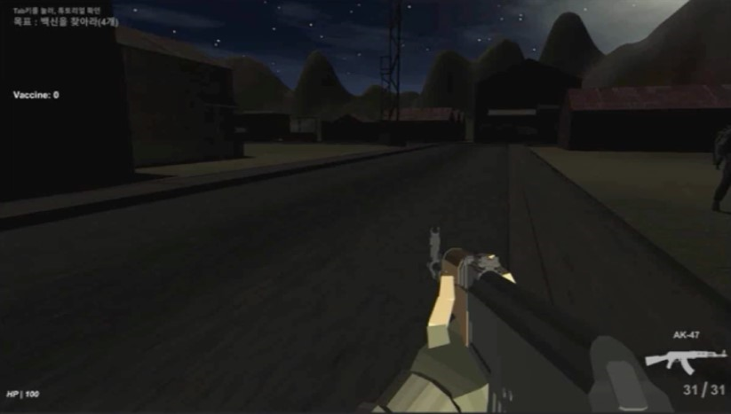
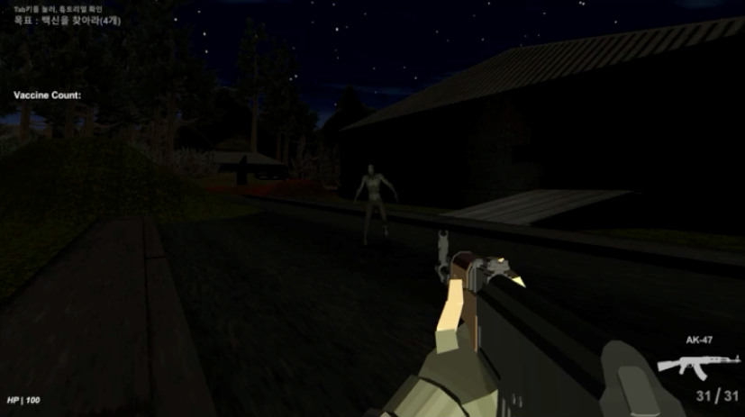

Surviving from Zombies
팀으로 진행한 텀프로젝트
3인으로 개발, 유니티 엔진을 사용
해당 html파일 다운로드 :
download
추가 정보 파일 다운로드 :
Download2
프로젝트 설명
바이러스에 감염된 좀비들이 넘치는 도시에서 백신을 모아 탈출하는 1인칭 슈팅게임
조작키 및 구현내용 설명
조작키
구현내용
WASD
플레이어 움직임 컨트롤
Left Shift
플레이어 달리기
Mouse Control
플레이어 시선 컨트롤
Mouse Left Click
총 발사
Hold Mouse Right Click
조준 사격
Space bar
플레이어 점프
R
장전
T
총 둘러보기
E
총 들기/집어넣기
F
칼 공격1
Q
칼 공격2
개인적으로 담당한 부분
근접공격 구현
좀비(적) 모델링을 제외한 것들을 구현
게임 오버 화면 구현(페이드 인, 페이드 아웃)
프로젝트 결과


프로젝트를 진행하면서 느낀 점
어려웠던 점
팀원과의 소통 부족
← 서로간의 소통이 부족하여 계획에 차질이 생김
서로의 작업물 병합하기
← 서로의 작업물을 이해하지 못해 합칠 때 어려움을 겪음
구체적이지 않은 계획
← 구체적이지 않아 프로젝트의 진행상황을 파악하지 못함
깨달은 점
팀원과 적극적인 소통을 하여, 진행하는 프로젝트를 이해해야함
서로 코드를 주고받을 때, 주석을 통해 상대방이 이해하기 쉽게 해야함
계획의 구체화(분석, 설계, 구현, 디버그)가 필요